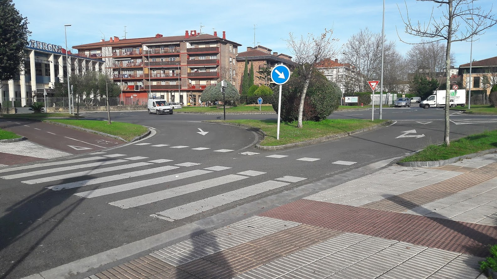
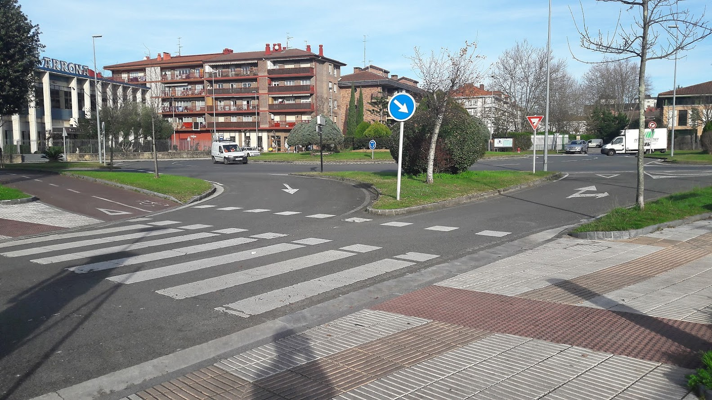

Ibilbidea
Ikastola, Asti, Zudugarai, Aitze auzoa, ikastola
Zarauzko hego-ekialdean kokatutako ibilbidea da hau. Asti eta Aitze auzoak ezagutuko ditugu, Zudugarai gainetik pasatuz. Bidea porlanezkoa da ia dena, Astiko Sasiko Baserritik Zudugaraira doan zatia izan ezik.
 1. arg.
1. arg.
Maria Etxetxiki kaletik irtengo gara, Salbatore Mitxelena ikastola aurretik (1. arg.). Ikastolatik abiatu eta eskuinera trenbide azpitik pasatuko gara. Suhiltzaileen aldera hartuko dugu (2. arg.), eta errekaren alboan dagoen bide gorrian ezkerretarantz hartuko dugu, autopista alderantz errekari jarraituz, Irita ondotik. Biribilgunearen azpitik pasako gara (3. arg.)
Maria Eizagirre “Maria Etxetxiki” Zarautzen jaio zen 1886. urtean Añurbe baserrian, eta Etxetxiki baserrira ezkondu.
Zarautzen kale horrek bakarrik du emakume baten izena. 11 seme-alaba izan zituen. 21 urterekin hasi zen emagin-lanetan, eta bizitza guztia eman zuen lan horretan. Baina ez hori bakarrik: 11 seme-alaben arduraz gain, besteak beste, injekzioak jartzen zituen, hilzorian zeudenak zaindu, San Pelaioko ermita zaindu eta etxeko baratzean jarduten zuen.
«Iñurritza» eta «Abendats» ezizenez ezaguna, Zarautzen jaio zen 1919an, eta euskal olerkaria izan zen. Apaiz frantziskotarra zela, Frankismo garaian Espainiako Eliza ofizialak jarraitzen zuen ildoarekin ados ez zegoenez eta hizkuntzaren eta hiztunen egoera itota ikusten zuenez, bere burua misioetara erbesteratzea erabaki zuen.
Mitxelenaren idazlanak euskararekiko eta Euskal Herriarekiko samin arduraz beterik daude eta bere olerkigintza bertsogintza tradizionaletik oso hurbil dago.
Iñurritza erreka erabat kanalizatua doa autopista azpitik pasa eta biotoporaino. Laster Iritan eskuineko horma kenduko zaio eta Irita naturalizatzeko lanei hasiera emango zaie. Irita lezkadi da gaur eta bere egoera naturala hobetuko da hemendik aurrera. Marea iristen da maiz bertaraino eta habitat oso aberatsa sortzen da bertan. Landare, arrain, anfibio, onddo, hegazti eta saguzar espezie asko bizi da bertan. Gaur egungo biotopoarekin lotura egin eta KBE (Kontserbazio Bereziko Eremua) berean sartu nahi dira Astialdearekin batera.
Bide gorriari jarraituko diogu Astin dagoen autopistako zubiraino (4. arg.). Bide gorriaren eskuin aldera Sakeletxeko lezkadi zoragarria dago (5. arg.), hegazti eta landare berezien bizilekua. Zubi azpira iristean ezkerretarantz hartuko dugu zubipean lehenik, eta gero 100 metrotara edo, eskuinerantz (6. arg.). Eskuinera Kirol instalazioak eta Zarauzko bailaran geratzen diren ia belardi bakarrak ditugu, noiz nahi lertxuntxoak eta neguan sarritan hegaberen pausaleku direnak. Belardien arteko erretenetan anfibio ugari bizi da.
 4. arg.
4. arg.
 5. arg.
5. arg.
Asti errekaren bailara da gaur Astialdea deritzona. Kirolgunerantz joanik, eskuinera Sakeletxeko lezkadi zoragarria dago. Eskuinera baratzeak daude errekaren alde batean eta bestaldean berriro lezkadiak. Proiektua da Asti errekaren albo bietan lezkadia berreskuratzea eta Iritarekin lotura fisikoa areagotzekoa, gaurko biotopoa, Irita eta Asti KBE (Kontserbazio Bereziko Eremua) berean sartzeko eta beren balio naturalistikoak batera babesteko.
Asfaltozko bidea amaituko da une batean (Sasiko Baserriaren ondoan), eta mendian gorantz abiatuko gara. Aldapa leuna da, eta ez da oso luzea. Ezkerretarantz trenbidea dugula egingo dugu goranzko bidea Aiara doan errepidera iritsi arte.
7. arg. 8. arg.Zudugaraiko gainera iristean (Xuaigai edo Orioko gaina ere deitua) Aiara doan errepidean eskuinera Aitze auzora eramango gaituen porlanezko bidea aurkituko dugu, aldapa behera eginaz (7. arg.). Errepide ondoan aurkituko dugu informazio-panela (8. arg.). Aurrera egin aldapa behera doan bide horretatik, ez dago galbiderik.
9. arg. 10. arg.Porlanezko bidea jarraituko dugu kilometro batzuetan eta bertatik ikusiko dugu Zarauzko herria (9. eta 10. arg.)
Zarauzko hegoaldean 50 metrotako altitudea duen muino bat dago, goialdean Arizia baserria duela. Sortu zen formari dagokionez, muino honek geologia arloan interes handia du. Harri berdexka batez -ofitaz- osatuta dago, Gipuzkoan toki gutxitan ageri dena.
Goi-triasikoan (orain 200 milioi urte) bolkanketak gertatu ziren, ondoren ofitazko agerpen diaporikoak sorraraziz.
Zer dira diaporak? Harrigai oso plastikoak, hauek estutu eta zapalduz goiko estratuak lehertu eta horietan zehar igarotzen direnak, hain zuzen. Igoera horren ondorioz, beren inguruan estruktura geologiko konplexuak sortzen dituzte eta, honela, geroztik gertatutako orogeniek estalita iraun zuten hainbat estraturen puskak azalean agertzen dira.
Ariziako agerpen diapirikoari esker, zona honetan buztin irisatuak daude, garai batean zeramikagintzarako erabiliak izan zirelarik. Hortik Buztinzuri industrialdearen inguruko toponimia.
(Iturria: Zarautz eta bere inguruak oinez)
 11. arg.
11. arg.
 12. arg.
12. arg.
Errepidean behera goazela, ia Zarautz gertu dugula, Arizia sagardotegia pasa eta bostehun metrora edo, Frantzeskua baserria baino lehen, eskuinera irekitzen den pistari helduko diogu. (11. arg.). Pista horri segituta laburtuko dugu ikastolarainoko bidea (12. arg.).
 13. arg.
14. arg.
13. arg.
14. arg.
Industrialde txiki bat (Buztinzuri) dagoen tokian, bidegurutzean beherantz, ezkerrerantz hartuko dugu (13. arg.). Autopista azpiko tunela igarota Itxas-Mendi auzora iritsiko gara. Itxas-mendi auzotik, errekaren beste aldera pasatuta, suhiltzaileen eraikin aldera egingo dugu. Biribilgunea eskuinetara utzita (14. arg.), zebra-bideak eta trenbideko tunela pasatuaz, iritsiko gara berriz ere ikastolara.